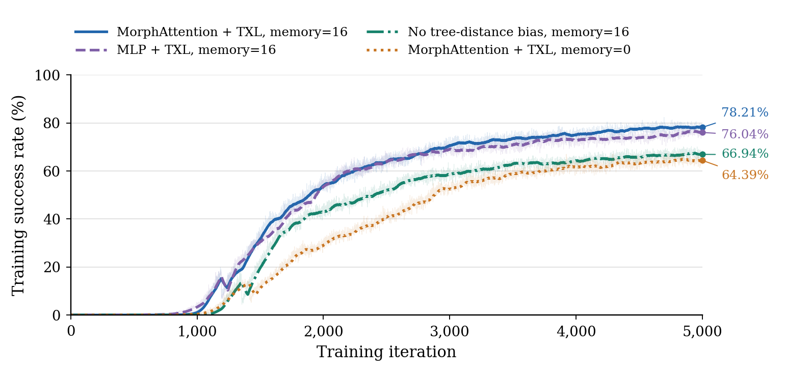

Real World Grasping Non-stop
Flexiv + Revo3 · 3× speedA single student policy distilled from successful rollouts. After a successful grasp, motion planning handles transfer to and placement in the basket.
1 HKUST(GZ)2 BrainCo3 Chongqing University
Each point represents a 128-dimensional Transformer-XL output with 16 steps of temporal memory, before concatenation with the task features. We visualize 800 samples per arm–hand combination, collected 1.0 s into each rollout.
A single student policy distilled from successful rollouts. After a successful grasp, motion planning handles transfer to and placement in the basket.
Seen embodiments · seen objects
Unseen embodiments · unseen objects
Over GRU when both are unseen

18 seen embodiments. Final 50-iteration averages: 78.21% (MorphAttention, memory 16), 76.04% (MLP + TXL), 66.94% (no tree bias), and 64.39% (no memory). All runs use a 60/20/20 nominal/initial/mid-episode fault mixture. Faint traces are raw values, not confidence intervals. These single-run adaptive-curriculum metrics are separate from the no-fault checkpoints evaluated above.
@misc{xu2026dexformer2,
title = {DexFormer 2.0: Towards a Cross-Embodiment Foundation Policy for Dexterous Grasping},
author = {Xu, Lixin and Zhang, Ke and Liu, Xinyu and Tan, Jie and Tan, Senming and Yin, Jiaju and Feng, Yating and Dong, Xiyue and Xu, Renjing},
year = {2026},
url = {https://davidlxu.github.io/dexformer2/}
}